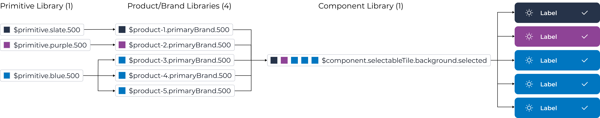
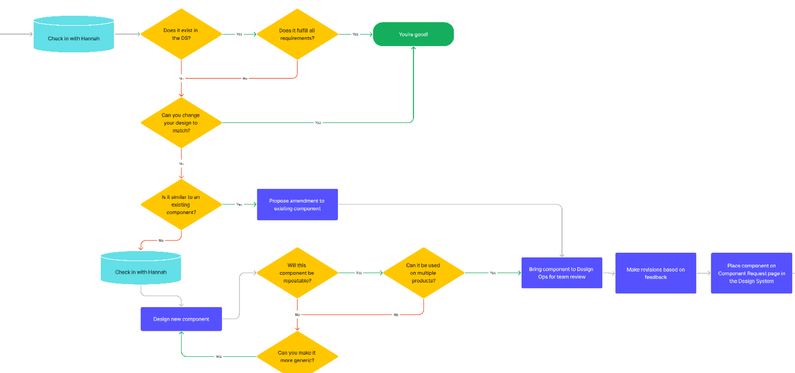
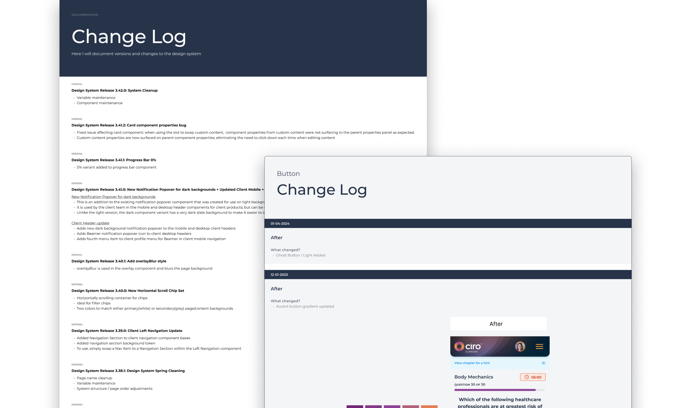

Project Introduction
This was the largest project I have ever been responsible for leading and executing; but also the most rewarding.
As the system would be actively used while I am building it; I needed to work incrementally and mitigate risk throughout. Although I encountered more than a few bumps in the road along the way, each problem was a unique challenge that pushed me to grow both professionally and personally.
My Role
It was my responsibility to own the Medical Solutions 3.0 Design System as its own product and partner with development to bring our Component Library to life.
Tools
Figma, Tokens Studio Plugin and Storybook.
Establishing Structure
One of the first problems I faced was components in the existing system were difficult to find.
As a solution, I created the structure for our Design System using Atomic Design principles by Brad Frost as a guide. It is divided up into five sections: atoms, molecules, organisms, templates, and pages. Each “level” builds upon the last - starting with the atoms, and eventually leading to page templates. This structure inherently creates an extremely flexible Design System that is easy to use.
Building a solid foundation
To create a solid foundation for our Design System, I focused on implementing the “atoms” first. This included typography, color, spacing, grid, radius, breakpoints, elevation and logos. This foundation made it easier for designers to create a consistent content hierarchy and user experience across our products.
Transitioning to Tokens and Variables
Making the transition from styles to utilizing tokens and variables within our design system was a big lift but an even bigger success; reducing the number of variants needed, and the overall system size, by 80%.
Previously, five component sets would be needed with one set for each product. But by utilizing tokens and variables, it was possible to support our five products using a single component set.
Need for Governance
Establishing a clear governance process that helps users understand what to do when and is essential for a Design System that stands the test of time. However, this process did not yet exist.
Working with UX leads I created and implemented our Design System Governance Process. This process defined how a component should be added to, updated, or removed from our Design System. To aid users with understanding the process, I created a flow diagram and added it to our system for future reference.
Finding Sources of Feedback
Creating a highly flexible system that works for a wide range of use cases is not something that can be done in a vacuum. I needed to facilitate constant feedback from many different sources to validate my work.
Design System and Component Library Retro
Hosting the Retro, I brought together design and development leads to discuss our Design System/Component Library. We focused on what was working, what was not, and what we could improve on.
Office Hours
I wanted to make sure I had blocked off time available, twice a week, where Designers could meet with me as a resource. Designers asked questions about components, how to use them, which one to use for a specific use case, or potential updates they wanted to request.
Component Review
On a weekly basis I held a component review, bringing together UX Leads. We discussed new component requests, how the components might be used in their product(s), any concerns, and to review component documentation. This review was invaluable because it allowed me to validate component utility and flexibility cross-functionally.
These are just a few of the many essential feedback loops I incorporated into our Design System.
Creating Component Documentation
To help designers when deciding which component to use and when, clear documentation was needed. Unfortunately, due to MS 3.0 being a new library, there was no existing documentation.
Creating good component documentation is essential to any Design System or Component Library. It is extremely helpful for recording design decisions, development specs, micro-interactions, anatomy, and usage standards.
Having documentation to reference was an essential tool to create consistency in our products.
Recording Changes
As time goes on, it becomes more challenging to remember what has changed in a Design System or component. Wanting to avoid this, I documented what changed in every single library update published; using a change log. Over time this evolved to include a detailed change log on each component page; documenting what changed after and what the component looked like before.
Results
Due to the complexity, enormity, and ever-changing nature of this project; I found myself tested in ways I have never been. The journey was a challenge but I learned a ton of new things along the way and with the following results:
- By utilizing tokens and variables, I increased system efficiency by over 80%
- MS 3.0 is actively used by designers in their work, leading to an increase in design and development velocity.
- Storybook 3.0 Library mirrors MS 3.0 Figma Library, facilitating consistency across our products.
- Components continue to be implemented in production, significantly decreasing the time needed to develop new features.